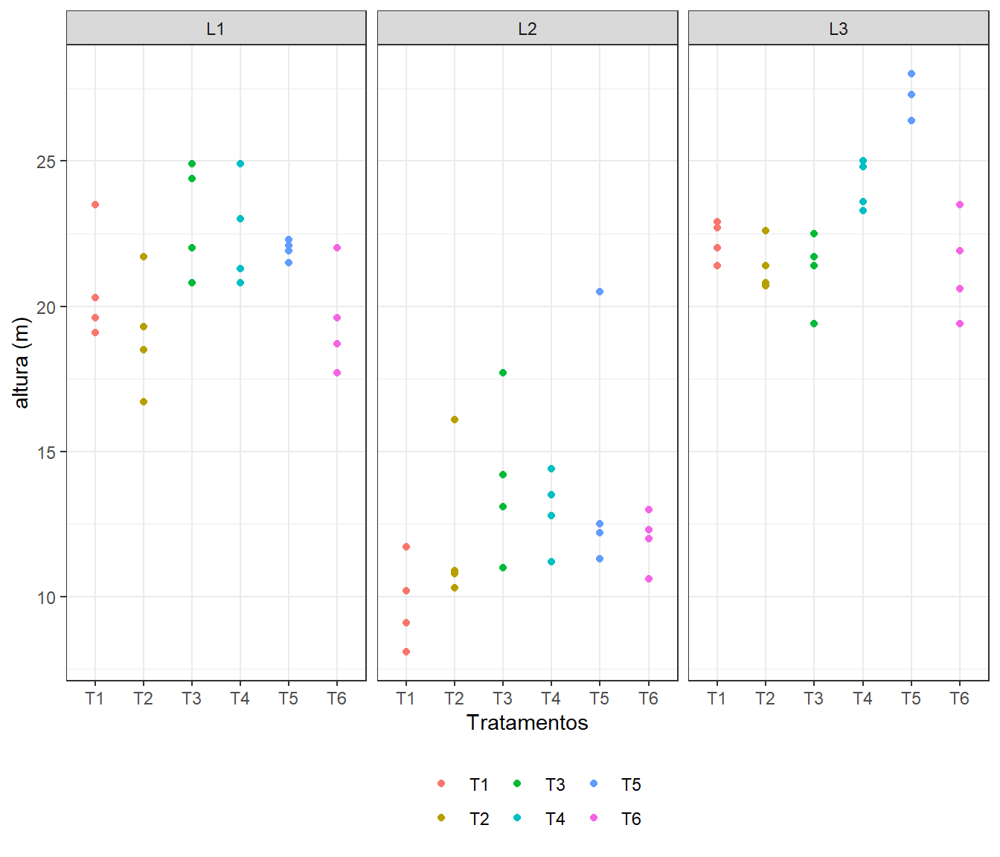
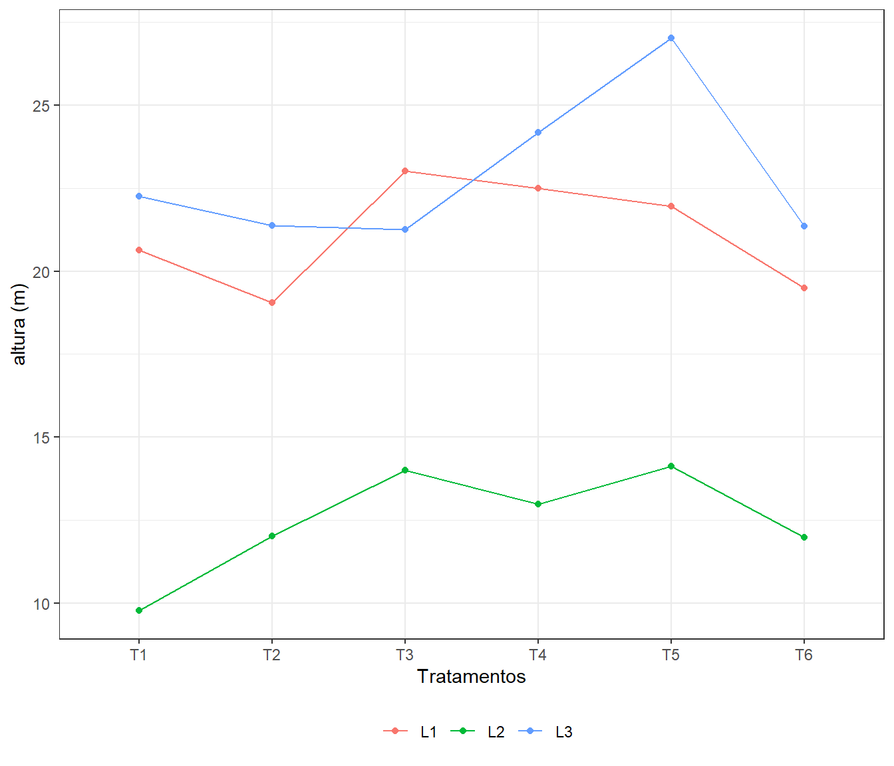
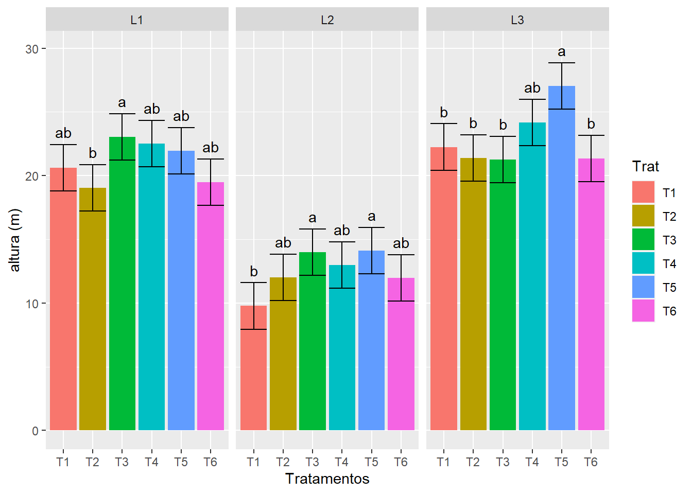

Os dados que se seguem referem-se às alturas (em metros, médias de 25 plantas/parcela) de plantas Eucaliptus grandis, com 7 anos de idade (em 1980) de três ensaios em blocos ao acaso, sob 6 tratamentos (progênies).
T1: Pretoria (Procedente da África do Sul), T2: 637 (Progênie de Rio Claro), T3: 2093 (Progênie de Rio Claro), T4: 2094 (Progênie de Rio Claro), T5: 9559 (Procedente da Austrália) e T6: 9575 (Procedente da Austrália).
Observação: Os dados foram cedidos pelo Engenheiro Agrônomo Luiz Carlos Costa Coelho do Horto Florestal de Tupi, SP.

Quando podemos agrupar os dados para a análise?
Em caso de homogeneidade de variâncias!
Vantagens:
Avaliar o efeito da interação Local#Tratamento (ou Repetição#Tratamento - Cuidado!)
Maior número de graus de liberdade do resíduo.
\(H_0: \mu_1 = \mu_2 = \ldots = \mu_6\) vs \(H_1\): pelo menos duas médias diferem entre si
Ao nível de 5% de significância, não há evidências para rejeitarmos \(H_0\). Logo, não há efeito significativo de progênie quando avaliado em Araraquara.
\(H_0: \mu_{T1} = \mu_{T2} = \ldots = \mu_{T6}\) vs \(H_1\): pelo menos duas médias diferem entre si
Ao nível de 5% de significância, não há evidências para rejeitarmos \(H_0\). Logo, não há efeito significativo de progênie quando avaliado em Bento Quirino.
\(H_0: \mu_{T1} = \mu_{T2} = \ldots = \mu_{T6}\) vs \(H_1\): pelo menos duas médias diferem entre si
Ao nível de 5% de significância, há evidências para rejeitarmos \(H_0\). Logo, há efeito significativo de progênie quando avaliado em Mogi-Guaçu.

\[\frac{max\{\text{QM Resíduo} L_k\}}{min\{\text{QM Resíduo} L_k\}}, k=1,\ldots,3.\]
\(H_0:\)Não há efeito da interação Local#Tratamento vs \(H_1\): Há efeito da interação Local#Tratamento
\(H_0: \mu_{T1} = \mu_{T2} = \ldots = \mu_{T6}\) vs \(H_1\): pelo menos duas médias diferem entre si
\(H_0: \mu_{L1} = \mu_{L2} = \mu_{L3}\) vs \(H_1\): pelo menos duas médias diferem entre si
Como o efeito da interação entre Locais e Tratamentos foi significativo (\(\alpha = 0,05\)), vamos avaliar o efeito de Tratamentos dentro de cada um dos Locais.
\(H_0: \mu_{L1T1} = \mu_{L1T2} = \ldots = \mu_{L1T6}\) vs \(H_1\): pelo menos duas médias diferem entre si
\(H_0: \mu_{L2T1} = \mu_{L2T2} = \ldots = \mu_{L2T6}\) vs \(H_1\): pelo menos duas médias diferem entre si
\(H_0: \mu_{L3T1} = \mu_{L3T2} = \ldots = \mu_{L3T6}\) vs \(H_1\): pelo menos duas médias diferem entre si
Há evidências para rejeitarmos as três hipóteses \(H_0\). Assim, pelo menos duas médias de tratamentos diferem entre si em cada um dos três locais (há efeito significativo de tratamentos dentro de cada um dos locais).
